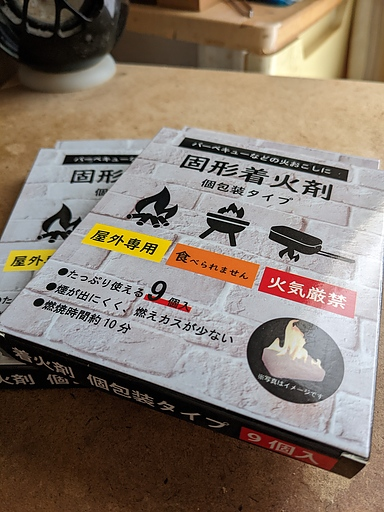
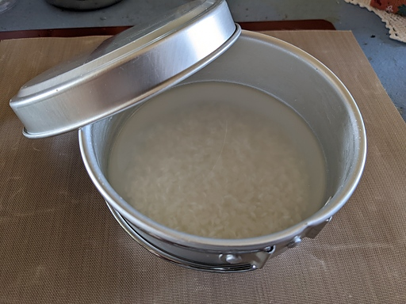
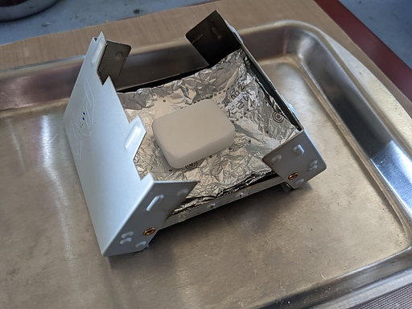
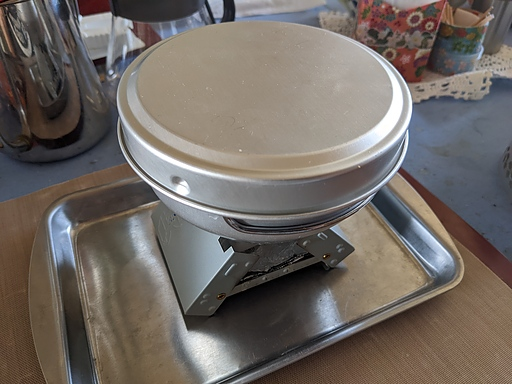
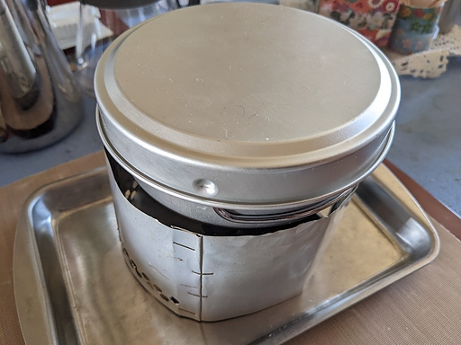
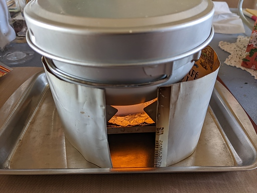
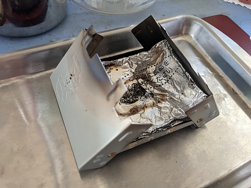
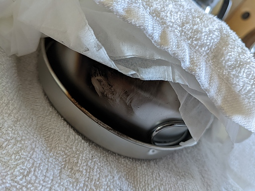
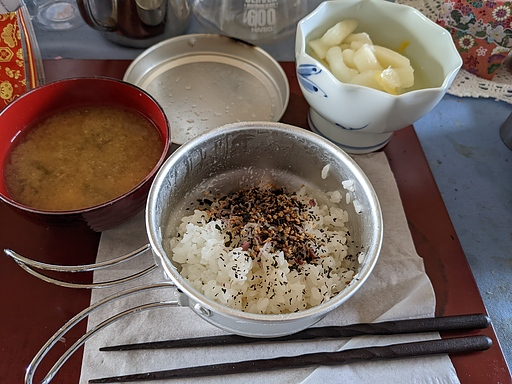

04 月 11日 ( 月 )
EPI アルミ食器 3 点セットとキャンドゥ固形着火剤で自動炊飯
昨日のダイソー・メスティン小とエスビットでの自動炊飯テストに引き続き EPI アルミ食器 3 点セットの食器大とキャンドゥ固形着火剤による自動炊飯テストをしてみた。
テストに使ったのは以下になる。
- EPI アルミ食器 3 点セット食器大
- キャンドゥ固形着火剤 10g x 1pc
- エスビット・ポケットストーブのコピー品
- 自作風防
- 米半合
- 水 100ml
ここで述べているキャンドゥ固形着火剤というのは下のパッケージの、いわゆるエスビットのコピー品のことである。

十分に洗った米半合を食器大に入れ水 100ml を入れ 30 分ほど浸水させる。

30 分ほど経ったあたりでポケットストーブにアルミ箔を敷いて固形着火剤を乗せる。

ポケットストーブに食器大を乗せて安定することを確認。

まだ着火していないが、風防をセットするとこんな感じに。

固形着火剤に点火し、あとは完全に放置。

しばらくして鎮火を確認。時間を測ってはいないが 10 分程度だと思う。

メスティンのときと同様に煤やタール対策にティッシュを敷いてさらにタオルでくるんで 15 分ほど蒸らす。

ぱっと見た感じではうまく炊けてそう。

うまく炊けてた。いただきます。

なおエスビットもそうなのだけどこのタイプの固形燃料は不完全燃焼には気をつけたほうがよい。
安全性とかの理由ではなく、おそらくこのタイプの固形燃料でコッヘルにタールがこびりつくのは燃料の不完全燃焼のせいだからだ。
燃料の燃焼時に水蒸気ではない白い煙が出るようであれば不完全燃焼を起こしている。風防を調整して十分な空気が取り込めるようになると不完全燃焼は収まる。そのためタールのこびりつきはなくなる。それでも煤は着くのだけど、煤は焚き火の直火と同様にこの燃料の宿命なので受け入れることが必要。煤が食器に着くのがどうしても嫌な人はアルコールストーブやガスストーブの利用を検討したほうがよい。
以上参考に慣れば幸いである。
- Category :
- 日記
- キャンピング
- キャンプ
- アウトドア
- Camping
- Outdoor